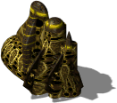
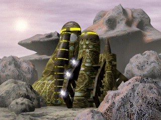

Heavy Factory


Level 1 (base building)
- Power required:
- 1300
- Energy (HP):
- 3750
- Max number of workers:
- 120?
- Build time:
- 36 s?
- Units produced:
Costs: Extract 2000 Iron 1300 Carbon 1000 Titanium 800
Upgrade 1: Heavy Factory
Research required: Heavy Factory Upgrade

- Power required:
- 1300
- Energy (HP):
- 3750
- Max number of workers:
- 120?
- Build time:
- 72 s?
- Units produced:
Costs: Extract 2200 Iron 1300 Carbon 800 Titanium 750
Config values not shown in game (9)
SIGHT- 4
BUILDER- 120
TRACE- 2
HEIGHT- 1
COMPONENT_QUANT- 1
SPRITE_QUANTITY- 1
TYPE- R_aFABRYKA
AIBLD- AIBLD_HEAVY_FACTORY1
AREA- 1, 1, 0, 0, 0, 0, 0, 0, 0, 0, 1, 1, 0, 0, 0, 0, 0, 0, 0, 0, 1, 1, 0, 0, 0, 0, 0, 0, 0, 0, 0, 0, 0, 0, 0, 0, 0, 0, 0, 0, 0, 0, 0, 0, 0, 0, 0, 0, 0, 0, 0, 0, 0, 0, 0, 0, 0, 0, 0, 0, 0, 0, 0, 0, 0, 0, 0, 0, 0, 0, 0, 0, 0, 0, 0, 0, 0, 0, 0, 0, 0, 0, 0, 0, 0, 0, 0, 0, 0, 0, 0, 0, 0, 0, 0, 0, 0, 0, 0, 0
Description
Modern alien ground and air units are produced in the heavy factory. After expansion, the heavy factory can also produce vertical take-off vehicles. The heavy factory is the basis for the creation of our invincible army. Vehicles constructed here are placed in hangars, at the airfield or at the launch pad, depending on the type of vehicle.
Related
- Requires
- Mother, Light Factory, Hangars, Heavy Factory, Heavy Factory Upgrade
- Unlocks
- Rocket Tower, Airfield, Mega Factory, Cerberus 102, Gryphon, Harpy, TM Vandalus, RM Hydra, TL Vandalus, Heavy Factory Upgrade, TM Vandalus, RM Hydra, TL Vandalus, Bio-Shield System, Plasma PowerSpeed, Phase Shield, Flow Engine, Active Core, Tron Shell, Actin Core, Korred Rocket, Launch Pad, HS Cyclop, Magnetic Bag
- Researched by project
- Heavy Factory, Heavy Factory Upgrade
- Produces
- Cerberus 102 (slot 0), RM Hydra (slot 1), TM Vandalus (slot 2), Harpy (slot 3), Gryphon (slot 4), TL Vandalus (slot 3), HS Cyclop (slot 4)
Config values not shown in game (9)
SIGHT- 4
BUILDER- 120
TRACE- 2
HEIGHT- 1
COMPONENT_QUANT- 1
SPRITE_QUANTITY- 1
TYPE- R_aFABRYKA
AIBLD- AIBLD_HEAVY_FACTORY
AREA- 1, 1, 0, 0, 0, 0, 0, 0, 0, 0, 1, 1, 0, 0, 0, 0, 0, 0, 0, 0, 1, 1, 0, 0, 0, 0, 0, 0, 0, 0, 0, 0, 0, 0, 0, 0, 0, 0, 0, 0, 0, 0, 0, 0, 0, 0, 0, 0, 0, 0, 0, 0, 0, 0, 0, 0, 0, 0, 0, 0, 0, 0, 0, 0, 0, 0, 0, 0, 0, 0, 0, 0, 0, 0, 0, 0, 0, 0, 0, 0, 0, 0, 0, 0, 0, 0, 0, 0, 0, 0, 0, 0, 0, 0, 0, 0, 0, 0, 0, 0